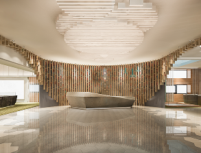
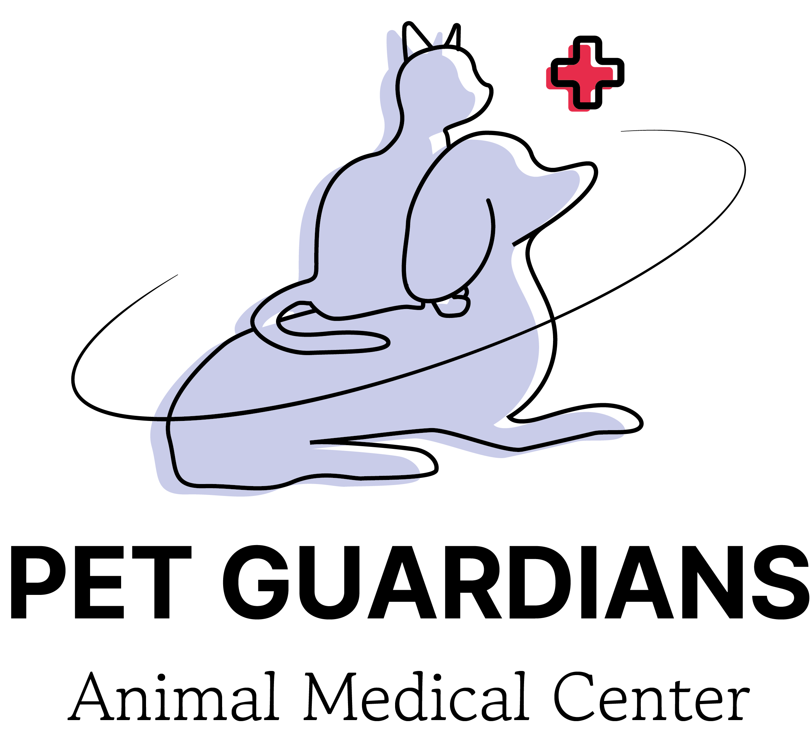
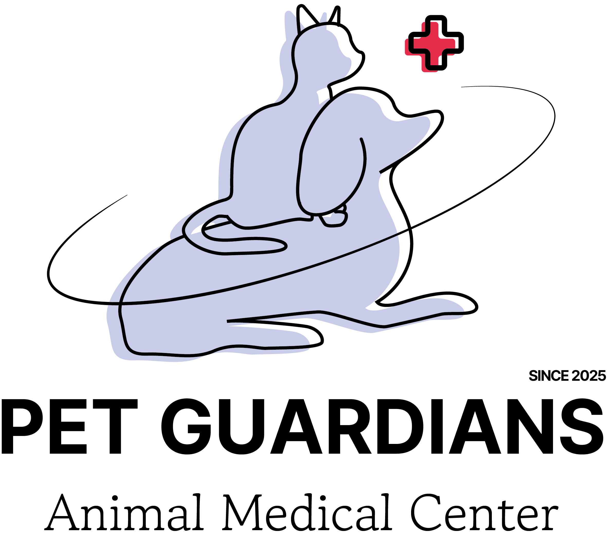

Guarding Health. Every Hour. Every Day.
우리 병원은 가디언즈와 건강한 삶을 위해
365일 24시간 운영하는 전문 동물의료센터입니다.
“가디언즈를 위한 첫 시작이 여러분의 꾸준한 관심으로,
수많은 가디언즈 케어를 유지하고 있습니다.”
그간 축적된 AI 기반 데이터를 활용해 현재 국내 최고 수준의 동물병원으로 성장하였습니다.
가디언즈 센터는 체계적인 진료시스템, 최신식 시설과 장비, 최고의 가디언 의료진을 구축하여
치료와 케어의 대한 마음, 반려동물을 향한 관심이 더욱 깊어지고 있습니다.
가디언즈센터&펫이 함께하는 우리 모두 가디언입니다.
-

의료센터
-
케어 전담반
-
국내외 연구활동
-

글로벌 교류 세미나
우리 센터는 펫 보험 연계형 시스템과 AI기반 빅데이터로 사람 수준의 의료 혜택을 가디언즈에게도 제공하기위해 설립이 되었습니다.
가디언즈는 여러 종의 반려동물을 지칭하는 센터 내 언어이며, 가디언은 병원 내 의료인과 펫을 보호하고 있는 반려인으로 부르고 있습니다.
PET GUARDIANS 센터는-
01
‘신속한 전문성’을
추구합니다.
AI 빅데이터로 가디언즈의 상태에 따라 1분 안에 자가진단 테스트를 할 수 있으며, 테스트 도입 시작점부터 응급, 긴급상황
여부 설문조사를 실행합니다. 여부 설문조사 후 사용자가 1분 자가진단이 시작되는 동안, 센터에서는 애니카를 지원 및 섭외하여
해당 반려동물을 신속하게 이동 및 치료할 수 있도록 설계가 되었습니다.
상황실에서 자가진단 데이터를 토대로 진료실로 알려 반려동물이 도착하자마자 수술 및 상세진단을 받을 수 있게 환경을 조성합니다.
02
‘환자중심’
병원입니다.
동물병원에서 ‘환자 중심’이란, 동물에 대한 생명존중에 존중에서 시작합니다. PET GUARDIANS의 모든 가디언들은
직업에 대한 사명감을 가지고, 진심 어린 마음으로 동물을 사랑하고 애지중지여기는 사람들로 구성되어있습니다.
이 철학은 중환자 관리나 응급, 긴급상황이 발생할 경우 더더욱 빛을 발하게 됩니다.
‘의료사고가 발생할 여지를 남기지 않는 병원’이 되고자 모든 가디언들의 마음 속에 깊이 담겨 있습니다.
03
‘새로운 서비스’를
제공하기위해
노력합니다.
PET GUARDIANS는 나날이 갈수록 올라가는 반려동물 관심도에 따라 다양하고 거기서 나오는 새로운 서비스를
원내에 직접 제공하기위해 꾸준히 배우고자 하는 자세를 가지고 있습니다. 이를 기반으로 우리 원내에서는 자체적으로
개발되는 서비스를 구축할 수 있고, 가디언의 교육까지 책임집니다.
위의 과정을 통해 보호자와 가디언의 의사소통을 하여 서로간의 신뢰감을 형성할 수 있습니다.
또한, 호텔링과 미용, 요양원 서비스 개선을 지속적으로 업그레이드를 하여 트렌드에 뒤쳐지지 않는 최신식 동물병원으로 유지합니다.
-

의료센터 로고(세로형)

-

의료센터 로고(SINCE형)
 메리츠화재보험
메리츠화재보험 삼성화재보험
삼성화재보험  캐롯손해보험
캐롯손해보험 DB손해보험
DB손해보험  KB손해보험
KB손해보험  라이나손해보험
라이나손해보험
(구)에이스보험 NH농협손해보험
NH농협손해보험 현대해상보험
현대해상보험